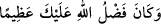

DÂVÛD’A
TARAFIMIZDAN BİR ÜSTÜNLÜK
VERDİK
10. Andolsun, Dâvûd’a tarafımızdan bir üstünlük verdik. “Ey dağlar ve kuşlar!
Onunla beraber tesbih edin” dedik. Ona demiri yumuşattık.
11. Geniş zırhlar imal et, dokumasını ölçülü yap. (Ey Dâvud hanedanı!) İyi işler
yapın. Şüphesiz ben, yaptıklarınızı görmekteyim, diye (vahyettik).
“Andolsun, Dâvûd’a tarafımızdan bir üstünlük verdik.” Allah Teâlâ Dâvud (a.s.)’a
içinde başka harflerle bitişen bir harf olmayan bir isim vermiştir. Bu da Allah Teâlâ’nın
Dâvud (a.s.)’ın gönül bağını bu dünyadan tamamen kestiğine, onu bir takım gizli ve
âşikâr lütuf ve ihsanlarıyla şereflendirdiğine delâlet etmektedir. Çünkü isim ile
müsemmâ arasında ancak hakikat ehlinin anlayabileceği bir münâsebet vardır. Ayrıca
lakap ve isimlerin gökten indiği de bir gerçektir.
“__WORD__ ziyâdelik demektir. Tenvîn ile gelmesi tür bildirmek içindir. Yâni ister
İsrâiloğulları’nın ister başka milletlerin peygamberleri olsun Dâvud (a.s.)’ın diğer
peygamberlere bir çeşit üstünlüğü vardır. Nitekim “O peygamberlerin bir kısmını
diğerlerinden üstün kıldık.” (el-Bakara, 2/253) âyeti buna delâlet eder. Bir kimsenin
bir yönden üstün olması, diğer bir yönden başkasından aşağı olmasına ters düşmez.
Bu üstünlük, bundan sonra zikredilen dağların tesbîhi, kuşların hizmetine verilmesi ve
demirin yumuşatılmasıdır. Bu ona özel bir mucizedir. Bu durum Dâvud (a.s.)’ın
üstünlüğünün yalnız bunlardan ibaret olmasını gerektirmez. Çünkü Allah Teâlâ ona
Zebur’u vermiştir. Nitekim Allah Teâlâ ona lütuf ve minnetini bildirme makamında:
“Dâvûd’a da Zebur’u verdik.” (en-Nisa 4/163) buyurmuştur.
et-Te’vîlâtü’n-Necmiyye’de der ki: “Dâvud (a.s.) ile bizim Peygamberimiz (s.a.)
arasındaki fark şudur: Allah Teâlâ Dâvud (a.s.)’a fazlını/verdiği üstünlüğü nekre bir
kelime (__WORD__) ile zikretmiştir. Bu fazîletin/üstünlüğün bir türüne ve bir kısmına delâlet
eder. Bu da vâsıtasız gelen ilâhî feyizdir. Nitekim âyetteki “ (tarafımızdan)” kelimesi
buna delâlet eder. Bizim Peygamberimiz (s.a.) hakkında ise:
“Allah’ın lütfu sana gerçekten büyük olmuştur.” (en-Nisa 4/113) buyurmuştur.